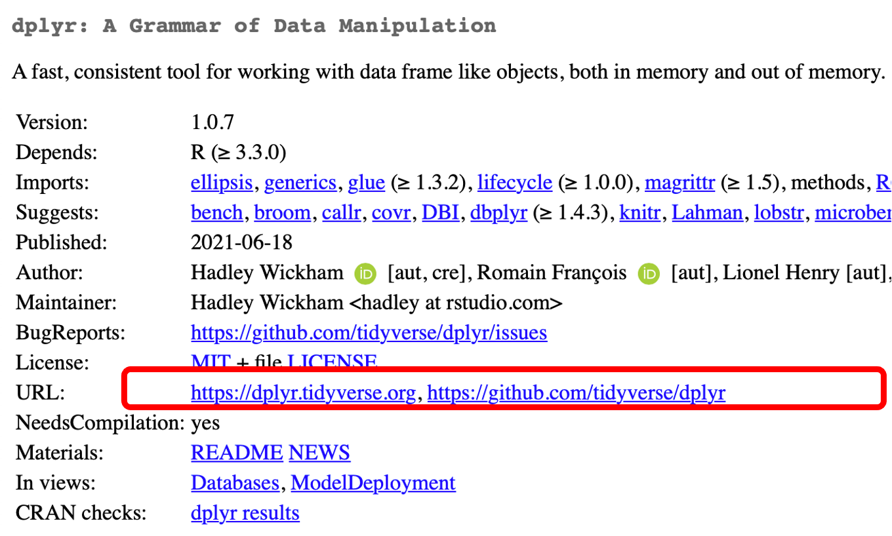

9 Compilación e instalación de paquetes
Joselyn Cristina Chávez Fuentes
30 de octubre de 2024
9.2 Metadatos de una paquetería
Los metadatos de la paquetería se encuentran en el archivo DESCRIPTION.
9.2.1 Description
El campo Description describe lo que hace tu paquetería. Suele ser extenso, si requieres escribir múltiples líneas, deben estar indentadas.
Por ejemplo:
9.2.2 Dependencias
Las dependencias son las paqueterías que tu paquete necesita para funcionar. La lista de paquetes se escribe separada por comas y es recomendado que se escriban en orden alfabético.
Existen tres tipos:
- Imports: Son paquetes que deben instalarse para que tu paquete funcione y por tanto se van a instalar en el momento que instales el paquete. Internamente existe una función que evalúa si los paquetes se encuentran instalados o no y solamente instala los faltantes.
Esta dependencia hace solamente la instalación pero no ejecuta library(), por lo que los paquetes requeridos deberán ser cargados dentro de la escritura del paquete.
Depends: Son paquetes que obligatoriamente deben estar para que tu paquetería funcione pero no se instalarán de manera automática. Aquí también se indica la versión de R requerida para el funcionamiento del paquete. Los paquetes que se listen aquí se van a cargar al mismo tiempo que se ejecute el library(mipaquete).
Suggests: Se refiere a los paquetes que tu paquete puede utilizar y aprovechar para ser más poderoso en el análsis pero no los necesita para funcionar. Por ejemplo, paquetes que contienen sets de datos para hacer pruebas o análisis de práctica.
Nota Importante
Se recomienda listar los paquetes necesarios para el funcionamiento de nuestro paquete en Imports porque cuando se ponen en Depends se cargan los paquetes completos y probablemente solamente requerimos una o dos funciones.
Cargar demasiados paquetes completos, sin ser necesario, sólo hace que nuestro paquete se vuelva pesado y lento. Es mejor llamar particularmente a las funciones usando la sintaxis explícita:
9.3 Licencias
Establece quién puede usar tu paquete. Existen diversas licencias pero hablaremos sobre las 3 más comunes:
- MIT (Massachusetts Institute of Technology): es simple y permisiva. Permite a cualquier persona usar y distribuir tu paquetería con una sola restricción: la distribución debe incluir la declaración de licencia del autor. Existe un texto base al cual se le pueden añadir cláusulas o excepciones. Este es un ejemplo:

GPL-2 (General Public License): Permite usar y distribuir tu código con la condición que si se genera una versión modificada de tu código, su distribución debe ser también bajo esta licencia. Aunque está enfocada a la distribución de código abierto, permite dejar en claro quién es el autor del material y evitar la apropiación del código por terceros. Un ejemplo de la aplicación de esta licencia es el desarrollo de Linux.
CCO: Esta licencia implica que cedes todos los derechos y el código puede ser utilizado con cualquier fin, excepto fines comerciales. Es el más utilizado en los paquetes. Concede el derecho a utilizar y distribuir el material sin requerir el permiso del autor.
9.4 Paqueterías de código fuente
En algunas ocasiones necesitaremos instalar paquetes que no se encuentran compilados, por ejemplo:
- Paquetes en desarrollo de CRAN o Bioconductor.
- Versiones anteriores de paquetes de CRAN o Bioconductor.
- Paquetes que no se encuentran depositados en CRAN o Bioconductor, sino en repositorios personales como GitHub.
- Paquetes que estás desarrollando de forma local.
El paquete remotes será de gran utilidad.
Regularmente, los paquetes que instalamos desde algún repositorio como CRAN o Bioconductor son paquetes binarios que ya se encuentran compilados previamente.
Existen algunas funciones que nos permiten instalar paquetes desde código fuente. Anteriormente, se solían utilizar las funciones install_* del paquete devtools; sin embargo, recientemente se creó el paquete remotes que contiene las mismas funciones pero está específicamente diseñado para ayudarnos a trabajar con paquetes desde código fuente.
9.5 ¿En dónde podemos encontrar el código fuente de un paquete?
Si el paquete se encuentra disponible en CRAN, puedes encontrar el link al código fuente en la sección URL.

Si el paquete se encuentra disponible en Bioconductor, puedes encontrar el link al código fuente en la sección Package Archives

Si el paquete se encuentra en GitHub o GitLab, necesitarás conocer el nombre de usuario y el nombre del paquete.
9.6 Instalando la última versión en desarrollo
- Si el paquete se encuentra depositado en CRAN podemos usar la función
Por ejemplo, para instalar la versión en desarrollo de dplyr usaremos el comando
- Si el paquete se encuentra en Bioconductor usaremos la siguiente función:
Por ejemplo, para instalar la versión en desarrollo de regutools, el paquete desarrollado por miembros de la CDSB, usaremos el comando
9.7 Instalando paquetes desde GitHub
Para poder instalar un paquete desde GitHub necesitaremos conocer el usuario del creador y el nombre del repositorio.
Por ejemplo, para instalar el paquete starwarssay desarrollado por Erick Cuevas (Erickcufe) utilizaremos el siguiente comando:
Independientemente de si el paquete se encuentra en CRAN, Bioconductor, o ninguno de ellos, podemos instalar un paquete depositado en una cuenta de GitHub.
Para poder instalar un paquete desde GitHub necesitaremos conocer el usuario del creador y el nombre del repositorio donde se encuentra depositado el paquete. Con esta información usaremos la siguiente función:
9.8 Instalando un paquete local
Paso 1: Abre el proyecto del paquete que estás desarrollando.
Paso opcional: Ejecuta la documentación si realizaste algún cambio.
- Paso 2: Construye el paquete:
- Paso 3: Instala el paquete desde tu proyecto actual:
9.9 Contribuyendo código
Una ventaja de descargar el paquete de forma local es que puedes realizar cambios, probar que funciona de manera local y después contribuir (haciendo un pull-request).
Usemos el paquete saludo
- Clona el repositorio en tu computadora.
git clone https://github.com/ComunidadBioInfo/saludo.gitAhora puedes abrir el proyecto del paquete y agregar tu código.